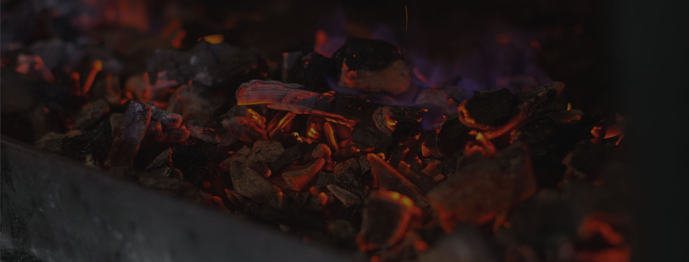

01
Wine
White Burgundy, Chablis, Loire, Mosel, Wachau and Moravia; reds from Burgundy, Bordeaux, Piedmont and Tuscany. The selection is built for acidity, smoke, fish, oysters and aged meat.
Section 03 · Drink
Champagne with oysters, wines for fish and the season, signature cocktails with a subtle Japanese-Nordic twist, and carefully chosen non-alcoholic serves.

White Burgundy, Chablis, Loire, Mosel, Wachau and Moravia; reds from Burgundy, Bordeaux, Piedmont and Tuscany. The selection is built for acidity, smoke, fish, oysters and aged meat.
The champagne list moves between Côte des Blancs, Montagne de Reims and Vallée de la Marne: growers, grand maisons and a few bottles held back for the right table. Ask for the current arrivals before you choose oysters.
The cocktail list is built in close conversation with the kitchen: precise prep, house ingredients, premium spirits and flavours that sit naturally beside oysters, fish and smoke.
Garage 22 River & Oyster gin • gooseberry • grapes • gyokuro • kombu seaweed
345 CZK
Butter-washed Jamaican rum 12y • apple-sourdough syrup • walnut
345 CZK
Raspberry vodka • strawberry • elderflower liqueur • lime • immortelle syrup • milk whey
345 CZK
Pai Mu Tan • apricot syrup • house non-alcoholic vermouth • oleo saccharum • verjus
345 CZK
At launch, the focus is on house non-alcoholic signatures, teas, verjus, infusions and kitchen-made components rather than a full pairing. Freshness, sustainability and in-house production lead the list.